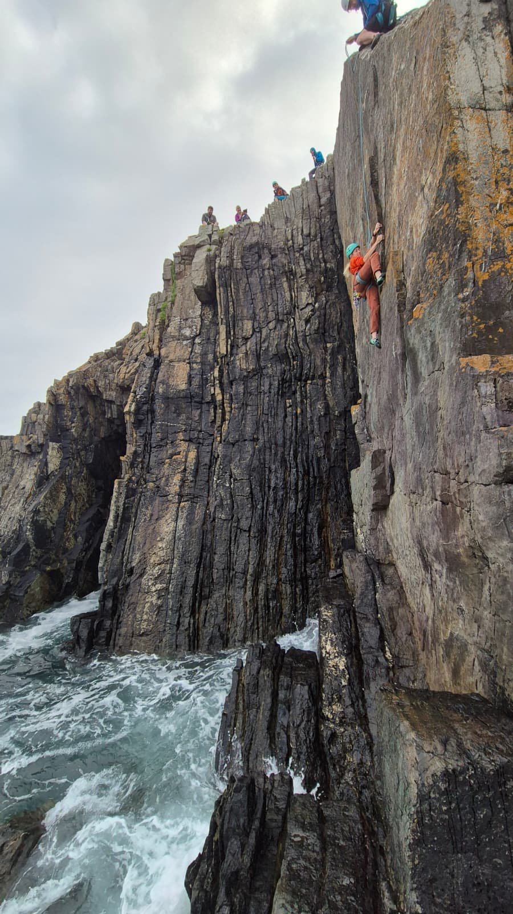

Members
Useful links
Here are some links that might be useful:- BMC Regional Access Database (RAD) - One of the best ways to find out about bird restrictions at crags!
- Pembrokeshire National Park's information for climbers - Some useful maps detailing climbing restrictions in local areas.
- BMC information for Castlemartin Range West - This provides details of the access arrangements for the Range West area of the Castlemartin Range (briefing dates).
- Castlemartin Firing Notices - The firing notices for the ranges, often useful to look at before heading to ranges along with the access information above.
- BMC Near Incident and Near Miss reports - A really useful resource where people have reported near misses or incidents.
Documents
- Club Constitution - to be uploaded soon.
- Privacy Policy - this details how the club handles information you provide us.
